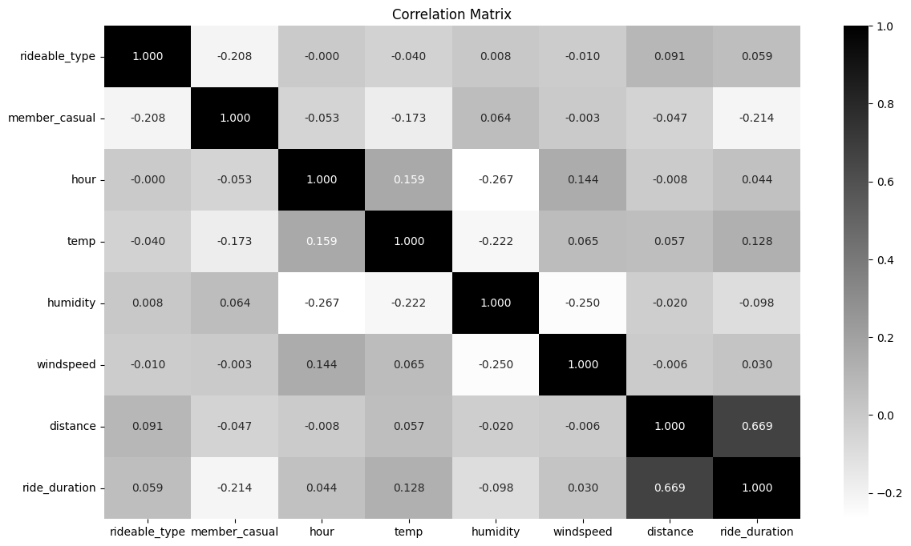
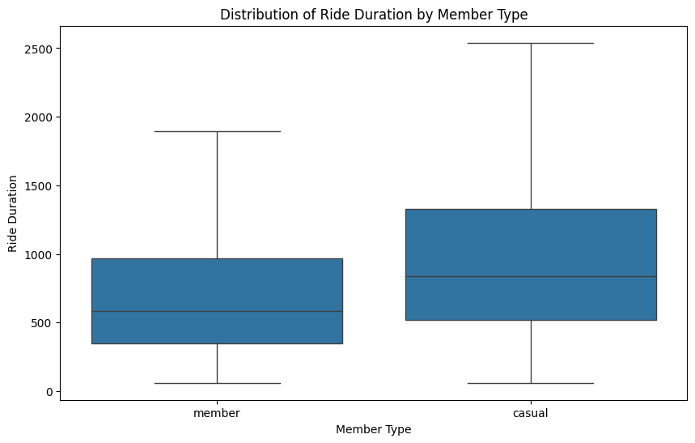
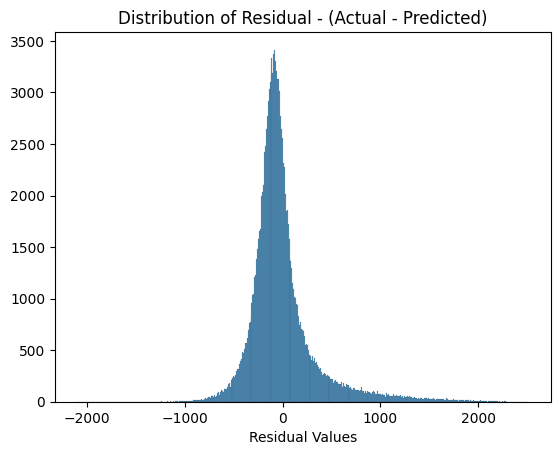

XGBoost: Predicting Trip Duration Using Machine Learning
A bike-share company needed an ETA feature to give riders fare estimates before they set off. This project delivers a gradient-boosted regression model trained on over 5 million trips, wrapped in a live Streamlit application.

The Problem
The CEO of a bike-share company is looking to enhance customer experience by introducing a feature that provides users with an estimated trip duration (ETA) when travelling between stations.
Beyond user experience, the feature unlocks real business value: accurate ETAs enable fare estimation, improve revenue tracking, and give riders clear cost expectations before they tap to ride. The challenge was building a model accurate enough to be trusted at scale, across varying weather conditions, station distances, membership types, and bike categories.
The model's predictions will be integrated into a user-friendly Streamlit application, allowing riders to input their trip details and receive an estimated duration and fare before they start their ride. This project not only demonstrates the power of machine learning in solving real-world problems but also provides a practical tool that enhances the overall user experience for bike-share customers.
The Data
Three data sources were combined to build a complete picture of each trip:
Historical Trip Records
Two full years of ride data (2020–2021), covering start/end stations, bike type, membership, and trip duration.
Hourly Weather Records
Temperature, wind speed, humidity, and weather condition for every hour — merged with trips by timestamp to capture real-world riding conditions.
City Holiday Dates
2021 public holidays, scraped and added as a binary feature to capture anomalous ridership patterns on non-working days.
Data Exploration (EDA)
During EDA, we analyzed factors influencing ride durations, such as time of day, day of the week, and month. Weather data provided insights into how temperature, humidity, and wind speed impacted trip times. Below is a simple correlation matrix between our features — 1 being the highest correlation.

Correlation analysis pointed to one dominant predictor: geographical distance between stations. The further apart the start and end points, the longer the ride. Weather, time of day, and bike type added signal on top, but distance was the foundation.
Taking a deeper look at the ride duration by member type, casual riders were observed to have longer trip durations, likely due to leisure or tourism activities, whereas members tended to use the service for commuting. These distinctions will aid in the model’s predictions.

Methodology
For the machine learning model selection, since we are aiming to predict a continuous target variable, we will use the XGBoost Regression Model. This supervised ML algorithm is particularly effective for large datasets, making it well-suited for accurately predicting trip durations based on a variety of features.
Preprocessing & Feature Selection
High-correlation features were identified and retained. Low-signal columns were dropped. A 500K-record training sample was drawn to keep computation tractable without sacrificing representativeness.
Feature Encoding
Categorical variables — bike type, membership tier, and weather condition — were mapped to numerical values. Label encoding was used for ordinal categories; binary flags for conditions like holidays and peak hours.
Distance Feature Engineering
First step was to calculate the geographical distance (km) between two the start and end stations, given their positions (latitude and longitude) as we saw in the EDA, this feature was the most important in determining the duration.
Outlier Removal
Dropping trips that started and ended at the same docking station. If we were to calculate the distance, it would return a distance of 0 km. But in reality, these are trips where the cyclist likely rode to and from the same station.
Additionally, I decided to drop rides running longer than 20 km from each station as these outliers could affect the model performance
Hyperparameter Tuning
GridSearchCV was used to optimise XGBoost parameters — learning rate, max depth, number of estimators, and subsampling — with mean absolute error (MAE) as the target metric.
Model Evaluation
After tuning, the model was evaluated. The results represent a strong baseline for a production ETA feature:
The error distribution reveals some critical insights:
- Impact on Short and Long Trips: The XGBoost model had an MAE of approximately 3 minutes, 75 seconds, which equates to about 27% of the average ride duration from all trips in our data. This suggests that, on average, the model's predictions are off by a few minutes, which can be a larger proportion of total ride time for shorter trips and a relatively minor issue for longer trips. For example, a 3-minute error is more impactful in a 10-minute trip than in a 40-minute one.
- Effect of Outliers: The MAE and RMSE show higher variability, likely due to outliers in the dataset, such as longer, unpredictable rides taken by casual users. Casual riders often have more exploratory travel patterns, unlike members who typically follow predictable routes.

- Centering Around Zero: The residuals are centered around zero, with a roughly bell-shaped curve, which indicates that, on average, the model does not overestimate or underestimate the ride durations. This is a good sign, as it suggests the model is unbiased.
- Narrow Peak and Tails: The narrow peak near zero suggests that the majority of the residuals are close to zero, indicating that the model performs well for most predictions, with small errors. However, there are longer tails, especially on the positive side, which means there are some cases where the model either underestimates or overestimates ride duration. These outliers could result from variations in the data that the model does not capture well, such as unusual ride patterns.
The Application
The model was deployed as an interactive Streamlit web app, giving any rider a pre-trip estimate in seconds. Users select start station, end station, membership type, and bike type — and the app returns estimated duration, trip cost, and an optimal route on a live map.
An OpenAI GPT-4 integration generates a natural-language route description for the selected stations — turning raw coordinates into a readable, human-friendly journey summary. The app supports four practical use cases:
- Trip cost estimation — know your fare before you ride
- Route visualisation — see your path on a live map
- Commute planning — real-time ETA for regular routes
- Member conversion — side-by-side pricing for casual vs. member fares
Conclusion & Next Steps
XGBoost delivered a strong predictive baseline for trip duration estimation — accurate enough to power a live fare estimation feature, and deployable within a polished user-facing application.
The primary weakness is prediction accuracy for short trips, where a 3-minute error is proportionally large. Future work would focus on enhanced feature engineering for short-distance rides, or experimenting with outlier-robust models such as neural networks for the casual rider segment specifically.
Explore the Project
Try the live application, read the full write-up, or browse the code.